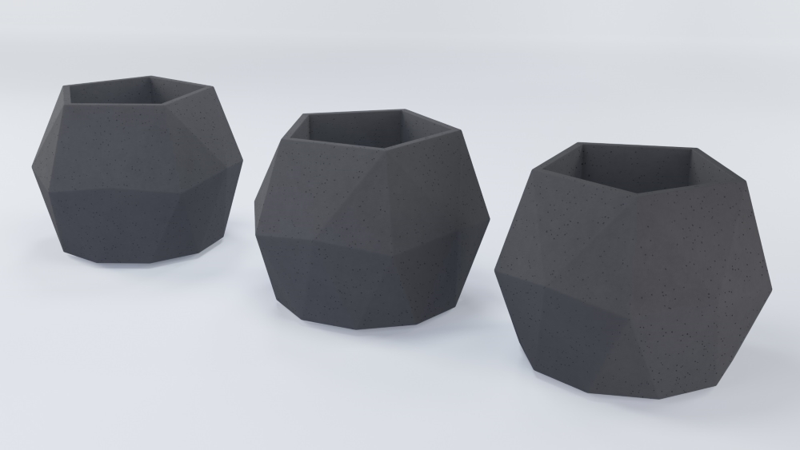
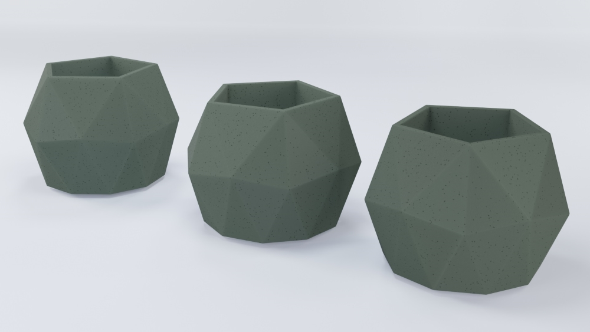
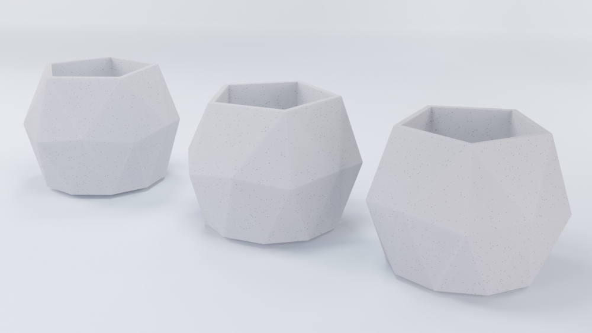
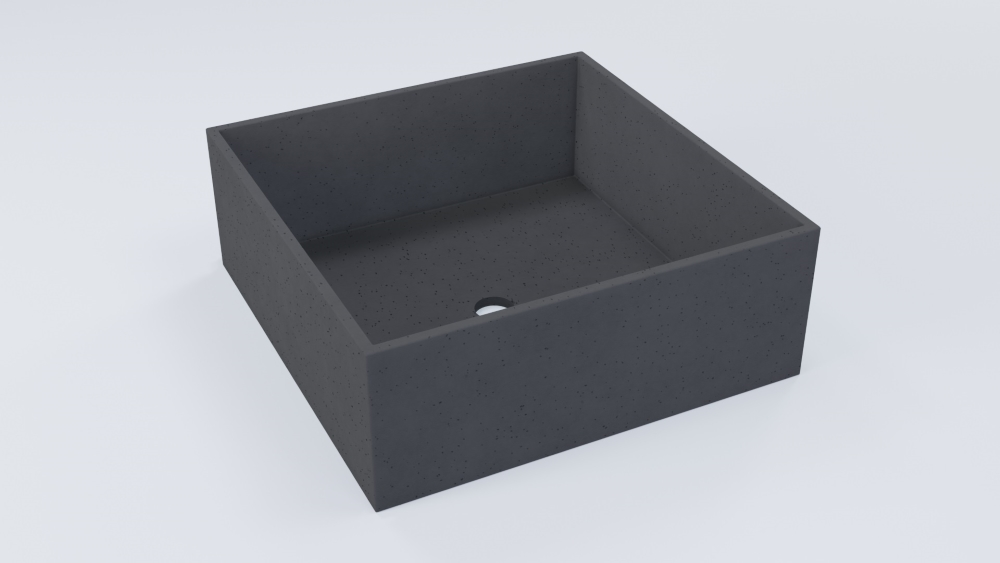
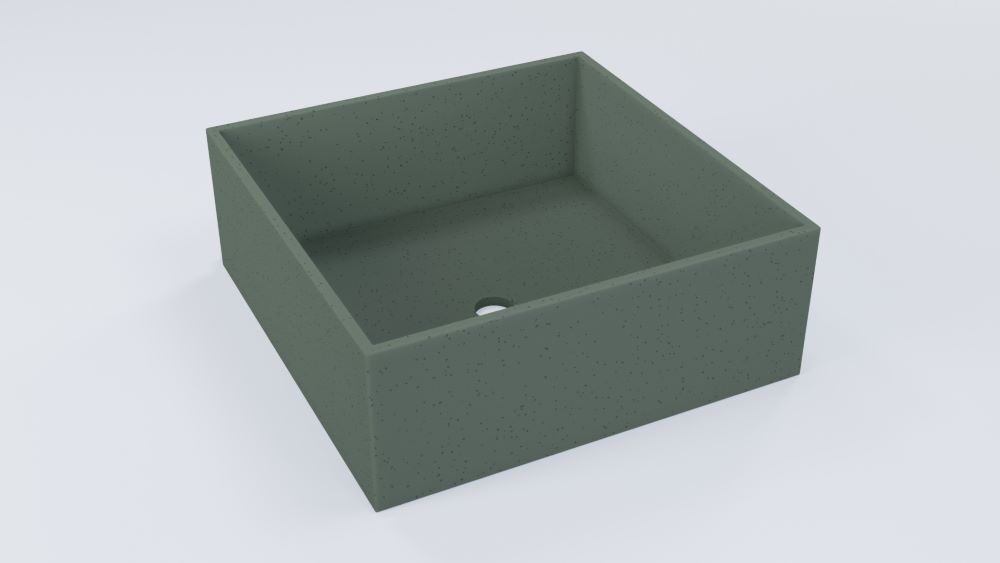
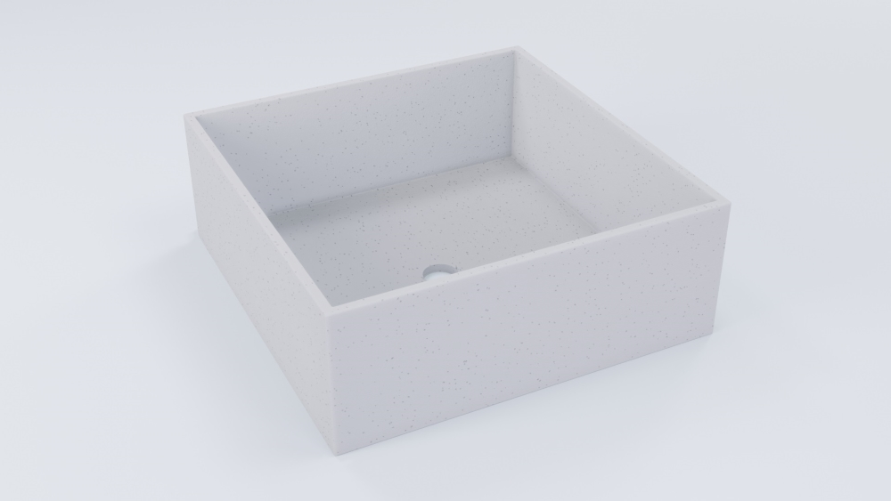

Przedstawiamy katalog produktów marki Cacti zawierający premierową serię ISOMARY SERIES, jak i nieco starsze, jednakże wciąż lubiane produkty z serii SQUARE SERIES. Oferta nie jest jeszcze bogata, jednak z czasem się powiększy!
IsOMARY SERIES - Nowość!

Premierowa doniczka mogąca pełnić funkcję osłonki z premierowej serii ISOMARY SERIES. Wyposażona w nowatorską technologie szkliwienia, dostępna w kolorze czarnym.

Premierowa doniczka mogąca pełnić funkcję osłonki z premierowej serii ISOMARY SERIES. Wyposażona w nowatorską technologie szkliwienia, dostępna w kolorze zielonym.

Premierowa doniczka mogąca pełnić funkcję osłonki z premierowej serii ISOMARY SERIES. Wyposażona w nowatorską technologie szkliwienia, dostępna w kolorze białym.
sQUARE SERIES

Klasyczna doniczka idealna dla roślin o niezaawansowanych systemach korzeniowych z serii SQUARE SERIES. Dostępna w kolorze czarnym.

Klasyczna doniczka idealna dla roślin o niezaawansowanych systemach korzeniowych z serii SQUARE SERIES. Dostępna w kolorze zielonym.

Klasyczna doniczka idealna dla roślin o niezaawansowanych systemach korzeniowych z serii SQUARE SERIES. Dostępna w kolorze białym.